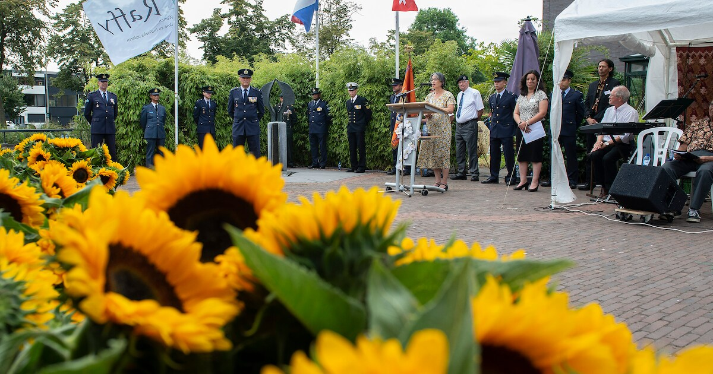

لماذا 15 أغسطس؟
يرتبط التاريخ باستسلام اليابان ونهاية الحرب في آسيا، بينما كانت هولندا الأوروبية قد تحررت في مايو.
يمثل 15 أغسطس نهاية الحرب العالمية الثانية رسمياً لمملكة هولندا، لكنه يفتح عدة ذواكر متجاورة: الاحتلال الياباني، الأسر، العمل القسري، النزوح، الثورة الإندونيسية، العنف اللاحق، وتجارب الهنديين والمولوكيين والإندونيسيين والبابويين وغيرهم في هولندا.

إحياء ذكرى إنديش في Raffy ببريدا — صورة صحفية.يرتبط التاريخ باستسلام اليابان ونهاية الحرب في آسيا، بينما كانت هولندا الأوروبية قد تحررت في مايو.
أصبحت Raffy في بريدا مكاناً محلياً لنقل الذاكرة بين الأجيال، مع نصب ومراسم واستماع لقصص متعددة.
ذاكرة الضحية الهولندية–الهندية ليست هي نفسها سردية الاستقلال الإندونيسي. LuxDot يعرضهما جنباً إلى جنب ولا يذيب إحداهما في الأخرى.
أُلغي إحياء بريدا في 2026 بسبب الحر الشديد؛ بقاء الذاكرة لا يتوقف على إقامة فعالية واحدة.
كيف نبني ذاكرة مشتركة من دون فرض قصة واحدة على جماعات عاشت الحرب ونهايتها والاستقلال بطرق مختلفة؟